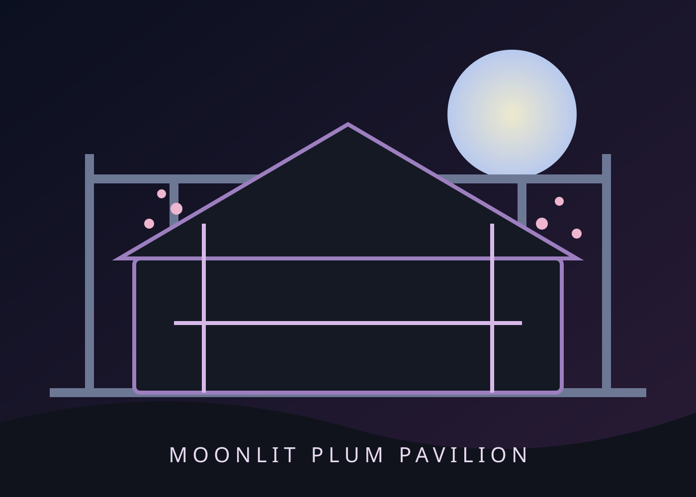
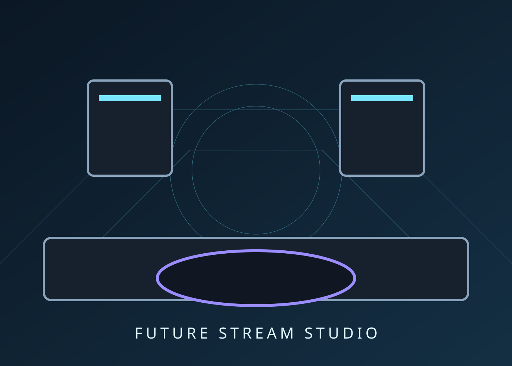
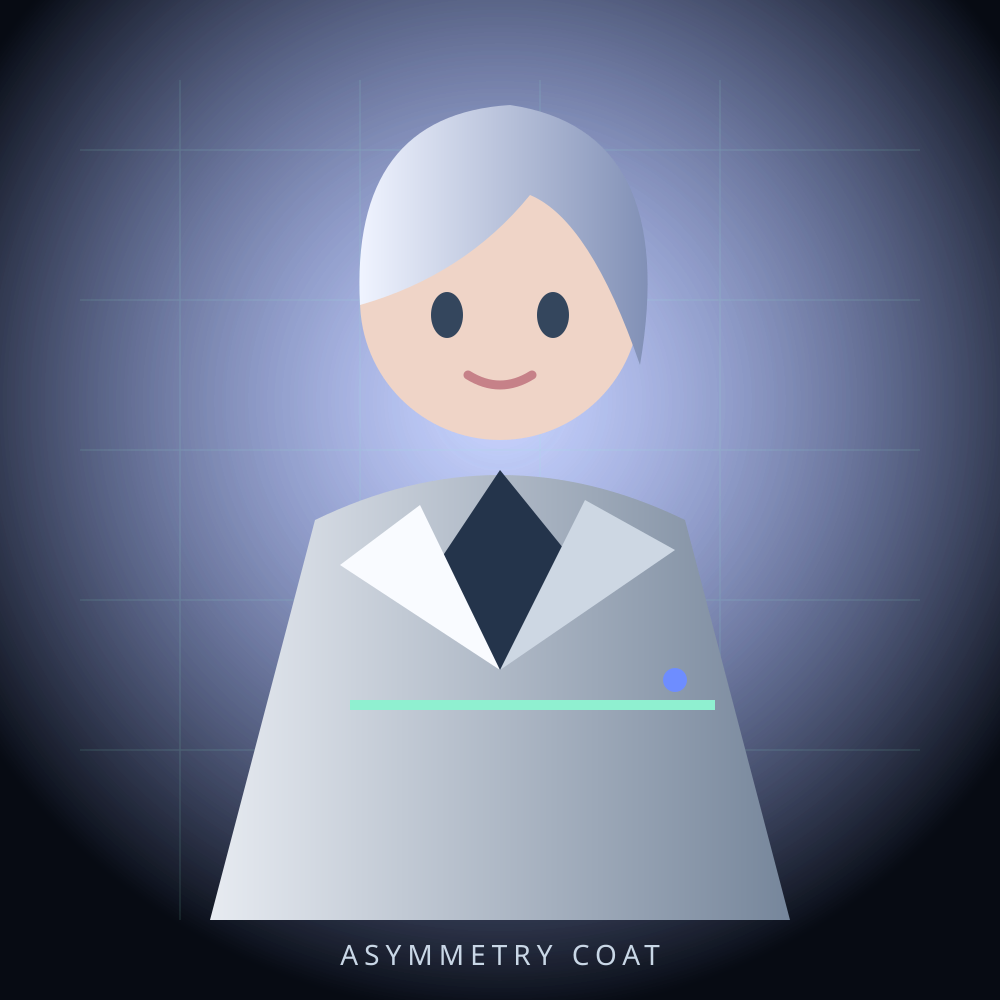
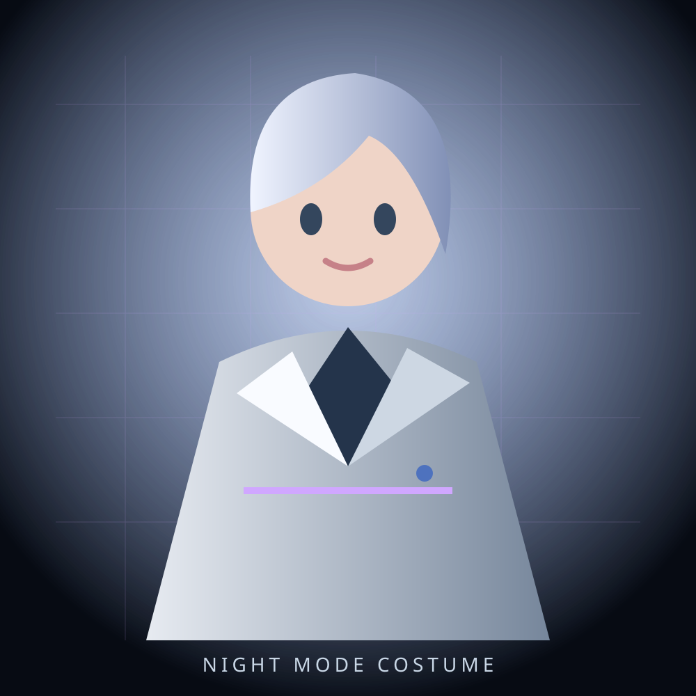

BACKGROUND / 01
FEATURED ENVIRONMENT
皇家大魔法圖書館
GRAND ARCANE LIBRARY
融合挑高穹頂、彩繪玻璃、金色裝飾與漂浮魔法元素，營造知性、溫暖且具有世界觀層次的主播空間。
- STYLE
- 奇幻・魔法學院
- MOOD
- 知性・溫暖・優雅

VIRTUAL CREATION PORTFOLIO
探索 VROID 虛擬角色、服裝與主播背景的設計紀錄。
FEATURED ENVIRONMENT
GRAND ARCANE LIBRARY
融合挑高穹頂、彩繪玻璃、金色裝飾與漂浮魔法元素，營造知性、溫暖且具有世界觀層次的主播空間。

ORIENTAL ENVIRONMENT
MOONLIT PLUM PAVILION
延伸同一幻想世界中的東方王朝支線，以月色、梅花與深色建築結構降低角色服裝與場景撞色。

STREAMING ENVIRONMENT
FUTURE STREAM STUDIO
以幾何框架、低反射材質和冷色發光線條構成，適合作為雜談、公告與科技內容的通用背景。
CHARACTER DEVELOPMENT
ASYMMETRY TECH UNIFORM
以配搭中天寶寶來開發，白色為主，搭配低彩度藍灰色細節跟深紅色點綴，讓服裝保有科技感而不顯得過度強硬。

CHARACTER DEVELOPMENT
Under development
還在想。

CHARACTER DEVELOPMENT
Under developmen
還在想。